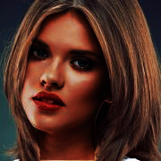
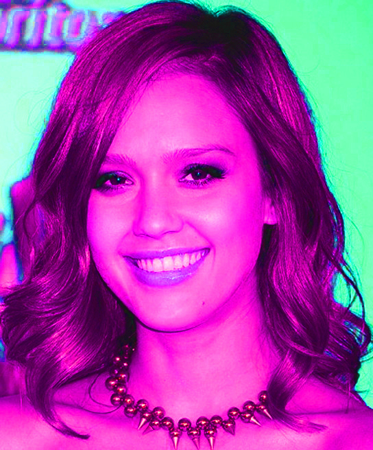
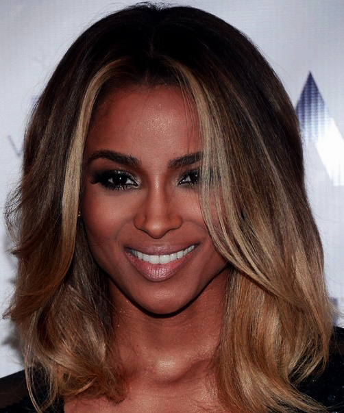
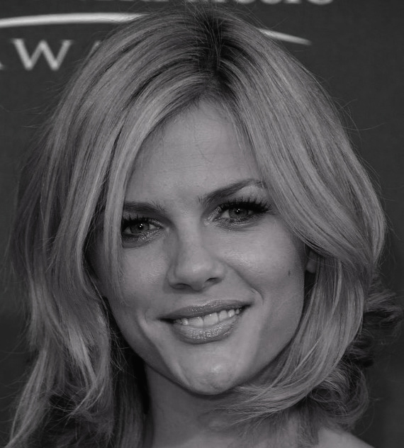

|
Beautiful Mid Length Hairstyles




There are several varied mid length hairstyles for women.
Since this is a versatile length then it can be styled in numerous ways.
Mid length hairstyles are the latest trend right now.
Longer styles used to be popular but now medium length styles are taking over since it is practical.
If you are planning to cut your long hair and you are searching for the best way to style it then you're at the right place.
From long straight styles to layered looks, there are many hairdos that you can try for your mid-length hair.
If you have a tousled hair then Jessica Alba's look is worth a try.
From waves to retro styles, Emma Stone shows that she knows how to style her mid-length hair.
If you have thin hair and you want to make it look voluminous then just add some choppy layers into it.
For thicker hair, blunt cuts are the best. Whatever hair type or hair texture you have, there's always a style that is suitable for you.
You can wear it at work or at special events.
If you have medium length hair then this is the perfect place to find the current style. Check it out! |